The Ova Of The Anophelinae
Description
This section is from the book "Malaria, Influenza And Dengue", by Julius Mennaberg and O. Leichtenstern. Also available from Amazon: Malaria, influenza and dengue.
The Ova Of The Anophelinae
The eggs are generally laid upon a floating object, though also upon the surface of water or moist mud. They are laid in a piled up mass, even when deposited on the water, but these masses are quickly dispersed by currents in the water or by the wind, and the eggs then form the well known patterns in triangles or parallel lines. About 100 eggs are laid, and the size of the egg varies from 1/2 to 1 mm. The eggs are boat shaped, flat on the upper surface, and convex on the lower surface. The broad end of the egg contains the head of the larvae, and is the dependent end when the egg is drawn up by capillarity on the sides of a vessel. The upper surface is granular or reticulated in appearance. This surface is continuous with the extremities of the ovum, and at the point of junction several polygonal areas can be seen. The lower surface is smooth and dark gray, but in some species is marked out in hexagonal areas. From this, however, may be detached a silvery membrane representing the follicular epithelium of the ovum. The delicate chitinous covering of the whole ovum is modified laterally into two prominent structures known as "the floats." They consist of folds or transverse corrugations of the chitinous envelop in which air is contained. By means of this arrangement the eggs float on the surface of the water. Their general shape is oval, but they vary in shape and extent in the different genera. Along the margin of the upper surface the chitin shows a frill like arrangement which is usually transversely striated. The width of this frill and its relation to the floats vary much in different ova. The ova of the Anophelince have so far been very little examined, but in the Indian Anophelince hitherto described there are three distinct types of eggs: Type 1: Ova have the upper surface very narrow, with the lateral floats not touching the upper margin. Ova of this type are found in Mr. barbirostris, M. listoni, etc. Type 2: Ova having a more or less broad upper surface, with the lateral floats touching the margin. Ova of this type are found in M. rossii, Ce. pulcherrima, etc. Type 3: Ova with no floats and with upper surface rudimentary. Only one anopheline is known with ova of this type, viz., M. turkhudi. It is interesting to note that ova of type 1 are found in natural waters or streams, whereas those of type 2 are found in pools. Further, there is an interesting difference between the arrangement or patterns taken up by the eggs of different species. Thus, Grassi had observed that the eggs of A. bifurcatus arranged themselves in star patterns, while those of A. maculipennis were arranged side by side, like a bridge of boats. This difference is dependent on whether the eggs belong to type 1 or type 2. Now the egg of A. maculipennis has been carefully described, and it belongs to type 2-i. e., with the upper surface more or less broad and the floats touching the lateral margin; so that this egg conforms to the rule which was found to hold good for a variety of eggs examined by Christophers in India. It must be left for future work to explain what the exact reason for this difference depends upon; at present we only know that the ova with the floats not reaching the lateral margin are found in open natural waters or streams. Further, within each type there exists considerable variation. Thus we may find that-(1) The frill varies in width, in extent (in its middle third it may be replaced by the floats), in the amount of striation, or it may be represented by a striated margin only. (2) The floats may be oval, globular, etc. (3) The eggs may or may not be ornamented on the lower surface with a reticulated pattern. With regard to the single representative of type 3, viz., M. turkhudi, it is evidently a most aberrant form. It approaches, indeed, both in its larval and in its egg characters, to the characters of the larva and egg of a culex. Thus the upper surface of the ordinary egg of the Anophelince is represented only at the broad end of the egg by a small oval area. This is glistening and striated, and probably corresponds to the upper surface of other eggs. The egg is quite devoid of any floats. At the thick end there is a pale area with indented edges. The eggs of M. turkhudi are, however, laid in a heaped up mass on a floating body, like those of other Anophelince, but it is a remarkable fact that when placed on the surface of water they sink to the bottom.
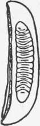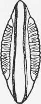1
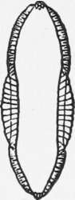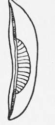2
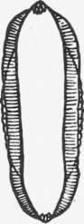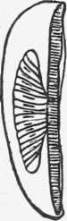3
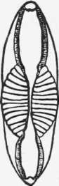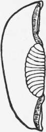4
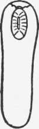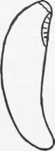5
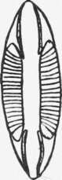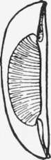6
Fig. 7.-Eggs of Anophelinae (from Stephens and Christophers' " Practical Study of Malaria").
1, M. culicijacies; 2, C. pulcherrima; 3, M. rossii; 4, N. stephensi; 5, M. turk hudi; 6, N. maculipalpis.
Duration Of The Egg Stage
Most of the observations on this point have been made in temperate climes. Thus Nuttall and Shipley give as the times for A. maculipennis, two to three days, while Howard gives for the same species three to four days, the longer time being in the colder month of April, the shorter in May. With regard to the power of resisting desiccation, experiments made by myself and Christophers in Sierra Leone showed that eggs dried on blotting paper would hatch after an interval of twenty four to forty eight hours, on being placed on the surface of water, while after forty eight hours none hatched out. If, however, eggs are preserved on damp mud and kept for forty eight hours and then transferred to water, larvae hatch out in a minute or two and the process may readily be observed under the microscope. But an exposure to the sun of twelve hours (in India) of eggs deposited originally on soft mud is sufficient to kill them so that none hatch on the addition of water. On moist mud eggs may still be alive after several days.
Continue to:
Tags
mosquito, malaria, influenza, dengue, symptoms, outbreaks, diseases, hemoglobinuria, infections